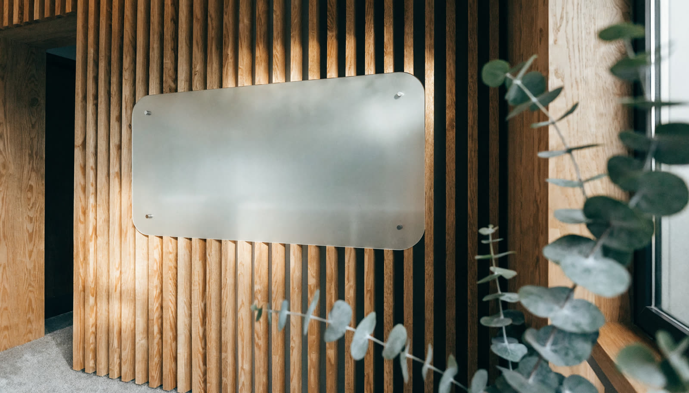

Brand Book · Identidade Visual 3.0
Sua dose diária de saúde.
Tudo aqui foi extraído do produto real: o site v3, o app e a forma como a marca já se comporta em movimento. Nada é teórico.
Saúde não acontece na consulta.
Acontece nas pequenas doses de todo dia — o prato fotografado, o treino feito, o hábito que virou jogo.
A MyDose transforma profissionais de saúde em empresas de saúde. Cada elemento visual carrega essa ideia: o gradiente é a energia da dose, o sparkle é o momento do hit, a serifa itálica é a voz humana no meio da tecnologia. O sistema D.O.S.E. — a neuroquímica do hábito — dá nome à marca e cor ao sistema:
Contexto: são 9 milhões de profissionais para 8,1 bilhões de pessoas — 1:900. A marca existe pra fazer a saúde acontecer entre as consultas.
O logo da MyDose é 100% tipográfico — sem símbolo acoplado. “my” é neutro e humano; “dose” recebe o Gradiente 1, a energia da marca. Simples de lembrar, impossível de errar, perfeito em qualquer tamanho digital.
Estudamos cinco construções. O wordmark segue soberano; o monograma-sparkle nasce para onde palavra não cabe: ícone de app, favicon e avatar.
A assinatura oficial. Usar em 95% dos casos: site, apresentações, vídeos, assinaturas, materiais.
Wordmark + sparkle à esquerda. Só quando a marca precisa de um “sinal” a mais: capas, aberturas de vídeo, brindes.
A “dose” destilada num só sinal: sparkle branco em squircle gradiente. É o ícone do app, o favicon e o avatar das redes.
Empilhado, para formatos quadrados e verticais: etiquetas, stories de abertura, carimbo em foto.
Carimbo editorial para certificados, lacres, brindes e o programa de parceiros. Uso pontual, nunca como assinatura.
| Aplicação | Versão indicada | Observação |
|---|---|---|
| Site, decks, documentos, vídeo | V1 Wordmark | no claro: “my” ink · no escuro: “my” branco |
| Ícone do app · favicon · avatar | V3 Monograma-sparkle | nunca usar o wordmark espremido em quadrado |
| Capas, aberturas, brindes especiais | V2 Lockup sparkle | sparkle sempre no Gradiente 1 |
| Stories, etiquetas, formatos verticais | V4 Vertical | respiro generoso acima e abaixo |
| Certificados, lacres, comunidade | V5 Selo | 1 cor, ou gradiente só no sparkle central |
Zona de proteção: a altura do “d” em todos os lados. Nada entra aqui — nem texto, nem grafismo, nem borda.
Abaixo desses tamanhos o gradiente vira ruído: use a versão mono.
Não distorcer. Nunca esticar, comprimir ou inclinar.
Não aplicar sombra, contorno, relevo ou brilho.
Não recolorir. O “dose” é Gradiente 1 ou mono — nunca outra cor.
Não usar gradiente sobre gradiente. Sobre fundos vibrantes, mono branco.
Não trocar a fonte. O wordmark é Quicksand Bold, sempre.
Não ressuscitar o símbolo antigo nem acoplar ícones novos ao wordmark.
As primárias vêm do D.O.S.E. Cada uma tem um tom profundo (superfícies escuras) e dois pastéis (mídia e superfície clara).
Acessibilidade: texto corrido sempre Ink #1E1D1D sobre claro ou branco/rgba(255,255,255,.75) sobre profundo. Primárias vibrantes nunca carregam texto pequeno.
Aa Bb Cc
Retome o controle do seu faturamento.
Títulos e números-herói. Peso 380–460, optical sizing auto. O itálico é a voz humana: uma palavra por título, nunca a frase inteira.
Figtree — o corpo
Texto, UI, botões e labels · 400/600/700/800 · nunca em títulos displayQuicksand — só o logo
Exclusiva do wordmark. Proibida em qualquer outro texto.“aspas em Fraunces itálico”
Depoimentos e citações sempre na serifa itálicaQuatro formas derivadas do sparkle. Elas decoram, pontuam e se movem — mas nunca competem com conteúdo nem grudam no logo.
Regras de movimento (do site v3): parallax sutil no scroll, twinkle nos sparkles, rotação lenta nos arcos. Grafismos são atmosfera — em telas pequenas, escondem-se antes de atrapalhar o conteúdo.
A MyDose não usa foto parada quando pode usar vida: as imagens da marca são cinemagraphs — movimento sutil, quase imperceptível, em loop. No impresso, o frame. No digital, a respiração.
Profissionais e pacientes reais, em relação. O app aparece nas mãos, não flutuando.
Natural, quente, difusa. Nunca flash duro, nunca banco de imagem azulado.
3–5s em loop: um sorriso, um gesto, a luz mudando. Sem cortes, sem zoom.
Telas do app são gravações reais do produto — com toques e fluxos — nunca mockups pintados.

mydoseCada vertical herda o wordmark e ganha um mundo de cor próprio: primária no dia a dia, profunda nas superfícies escuras, pastéis nas superfícies claras.
Nutris, médicos, personal e fisio. Energia e recorrência.
Psicólogos e terapeutas. Vínculo e continuidade.
Clínicas multiprofissionais. Escala e confiança.
Reservada no sistema — vertical futura.
Léxico da casa: dose · hit · protocolo vivo · esteira · comunidade · aha moment · escravo do WhatsApp (a dor) · empresas de saúde (o destino). Evitar: “solução”, “inovador”, “disruptivo”, gerúndio corporativo.
feito com ética e ciência, por quem viveu a dor.
Identidade Visual 3.0 · Julho 2026 · ver o sistema vivo no site
Dúvidas de aplicação: o site v3 é a referência canônica de implementação.